| 本章只提供給完全沒接觸過零系列的玩家觀看令他們更容易投入遊戲，內容包括新手一般會遇到的基本問題。以下資料是僅為零系列玩家有的共識。如果您曾玩過零系列作，大可以把本章略過。由於紅蝶比較適合初學者玩，所以大部份圖片採用紅蝶。系列作中的模式大同小異，理解後便行了。 |
 | 保存遊戲進度 |
|
| 對於初接觸零系列的玩家，建議把記錄分散，因為萬一後期底片不夠用時，可以讀取前幾刻的記錄節省一點使用。不然後期才發現不夠用做成無法通關時便要重新開始。記錄點分別是照相機、燈籠及書台如下圖，當有浮遊靈或怨靈在附近 ( 燈籠熄滅呈灰色 ) 時則不能進行記錄。記錄次數並不會影響通關後的評價，新手應該養成經常記錄的習慣。 |
| 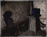 | 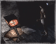 | 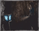 | 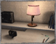 | 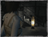 |
| ZERO | 紅蝶 | 刺青 - 夢境 | 刺青 - 現實 | 月蝕 |
|
| 各種道具的應用 |
|
万葉丸：
回復小量體力。在刺青之聲中這道具在睡醒時會自動補充，數量依難度而定，在夢中實在撐不下去便回到現實補充。所以普通模式下在每刻完結前如果萬葉丸少於四個，而您的體力又不是全滿的話便盡量吃吧。 |
御神水：
完全回復體力，和鏡石一樣十分珍貴。在刺青之聲中這道具在睡醒時不會補充以及不可以在交替角色時重覆取得。 |
鏡石：
體力下降至 0 時自動完全回復體力，身上只能放置一個。簡單來說便是死亡後原地復活。遇到頭目級怨靈，有時候傷害會爆鏡石然後再掉半段體力。 |
祓瘴燈火：
刺青之聲獨有道具。十ノ刻後場景會彌漫著瘴氣，身上持有祓瘴燈火才能吹散瘴氣，燈火熄滅後開始被刺青巫女追殺。詳情觀看刺青之聲的技巧心得。 |
| 射影機和底片 ( 膠卷 ) |
|
這個系列作遊戲中的武器有照相機和靈石灯，而底片相當於槍的子彈。
底片分為八種： |
|
O七式底片
出現：紅蝶、刺青之聲、月蝕的假面
|
|
一四式底片
出現：ZERO、紅蝶、刺青之聲、月蝕的假面
|
|
|
三七式底片
出現：ZERO
|
|
六一式底片
出現：紅蝶、刺青之聲、月蝕的假面
|
|
|
七四式底片
出現：ZERO
|
|
九O式底片
出現：紅蝶、刺青之聲、月蝕的假面
|
|
|
九O式底片
出現：ZERO
|
|
零式底片
出現：紅蝶、刺青之聲、月蝕的假面
|
|
威力：零式 » 九O式 » 七四式 » 六一式 = 三七式 » 一四式 » O七式
ZERO 裝填時間：七四式 » 三七式 » 一四式 » 九O式
紅蝶、刺青之聲裝填時間：九O式 » 六一式 » 一四式 » O七式 » 零式
月蝕的假面裝填時間：O七式 = 一四式 » 六一式 » 九O式 » 零式 |
| 如何切換底片 |
|
| 零系列中底片切換方法大同小異，只要記住射影機是「カメラ」和道具是「アイテム」。目前有三個方法，以下提供其中兩種方法，而第三種方法便是在刺青之聲中獨有，在射影機架設時第一視點用十字鍵左右來切換。 |
| 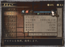 |
|
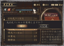 |
|
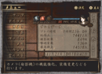 |
| 在左方選道具，HP 下方顯示目前底片。 |
用十字鍵上下選擇底片，然後確定。 |
完成切換。 |
|
| 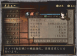 |
|
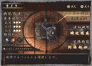 |
|
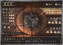 |
| 在左方選射影機，HP 下方顯示目前底片。 |
在右上按一下令它發亮然後用左右切換。 |
完成切換。 |
|
| 底片經常不夠用的問題 |
|
| 不是所有怨靈也需要交戰。除了會鎖門的強制戰鬥外其他大多數在您到達第二個房間後便不會追上來，當射影機升級到一定程度後便盡量逃吧。零～ZERO 最麻煩是連普通怨靈也會鎖門，不然便是穿牆一直死命追，您逃到那房間便追到那房間。紅蝶和刺青之聲可以利用連續拍攝造成的傷害加成來節省底片。 |
| 靈感應器 |
|
| 由於戰鬥時未必會經常看到怨靈現身，所以靈感應器的亮度十分重要。如果看到紅光最亮和手把的震盪幅度很大但又看不到它，那表示怨靈很大機會從您背後現身。零～ZERO 的惡夢模式甚至沒有靈感應器，完全靠聲音和手感掌握。 |
| 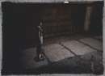 |
|
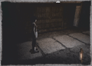 |
|
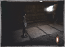 |
| 留意右下靈感應器，平時燈光沒有發亮。 |
當怨靈在附近時感應器會發出淡淡紅光。 |
隨着怨靈越來越近，紅光會越來越亮。 |
|
| 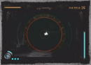 |
|
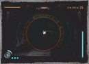 |
|
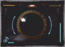 |
| 射影機在架設時靈感應器顯示在正上方。 |
靈感應器亮度、心跳聲和手把震盪幅度反映怨靈的方向距離。 |
紅光很亮但畫面上看不到怨靈表示怨靈可能在您左右或身後。 |
|
| 怨靈、浮遊靈及地縛靈 |
|
怨靈會主動攻擊玩家，而浮遊靈及地縛靈則不會攻擊玩家。
浮遊靈會在遊戲中的固定時間位置出現。浮遊靈分兩種，第一種是向一個方向移動一段距離然後消失，另一種是會瞬間出現然後消失。第一種浮遊靈的作用其實是為了告訴您下一步該到那裡去，第二種則是告訴您這個地方有關鍵物品。遊戲內有一個靈體列表，拍得的浮遊靈到達一定數量後會有其他獎勵。
地縛靈平時不會被玩家看到，需要自己找它出來，有些更需依靠射影機的追加機能來協助。接近地縛靈時靈感應器會發亮，當您舉起射影機找到它時靈力圈會呈藍色，多數是讓玩家拍攝後來解開其他已封印的門。
以下是拍攝地縛靈的方法： |
| 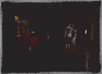 |
|
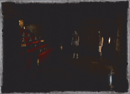 |
|
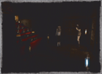 |
| 留意右下靈感應器，平時燈光沒有發亮。 |
地縛靈在附近時感應器會發出淡淡藍光。 |
玩家與地縛靈方向角度越接近藍光越亮。 |
|
| 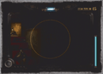 |
|
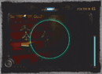 |
|
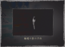 |
| 舉起射影機以 L3 移動找尋它的位置。 |
找到地縛靈或封印時靈力圈會呈暗藍色。 |
拍攝後便可以解開地縛靈或封印門。 |
|
| 會瞬移的怨靈都很難捉摸？ |
|
| 怨靈消失時先別急着舉起射影機，先不斷移動轉變自己的方向，然後憑靈感應器確定怨靈方位。每個怨靈都有自己獨特的進攻方式，對戰時先遊走一下了解它的進攻方式，然後再慢慢拍攝。 |
| 村子或屋子太大很容易迷路？ |
|
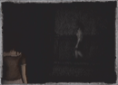解謎模式都有一個共通點，首先玩家在 A 區活動，A 區通常有一門被鎖上。當完成 A 區劇情後便會解開那門的封印然後進入 B 區。而 B 區大概會要求您跑回 A 區取回一些道具然後解鎖進入 C 區，完成三區後便會給您一條捷徑從 C 區返回 A 區。製作人在訪談上也提到盡可能不希望大家花太多時間在走路或找關鍵物。所以不用特地跑回一些毫不相干的房間來找線索，關鍵物品大多數在同一區。
有時候不要想得太複雜，卡關時留意提示照片上的場所以或跟着浮遊靈走，而無法繼續劇情大概就是要找關鍵物品或找封印靈拍攝來開啟一些已封印 ( 鎖上 ) 的門。 |
| 如何解開被封印的門？ |
|
| 當您經過一些已鎖上的門時，留意靈感應器有沒有變藍色及門上有沒有異狀，完全沒有靈力反應的話表示那門需要依靠鎖匙或劇情來開啟。如果有靈力反應的話那便是封印門，先往封印門拍照，照片上出現的場景便是您解除封印的地方。有些門是要從另一面打開。而最後一種門就是當按它時會出現小遊戲，解謎後門便會打開。有些小遊戲在解謎前必須先拿到道具，如 ZERO 的五芒星之石、紅蝶的家紋風車和刺青之聲的石棋。 |
|
|
| 跑到照片中的場景對着那物件拍照後封印便會解除。靈感應器的燈光在解封地點的附近時會以藍色明暗度提示方向角度。封印解除後便可進入被封印的門。 |
| 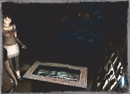 |
|
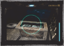 |
|
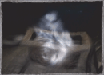 |
| 零系列每代的封印門樣子都不一樣： |
|
| 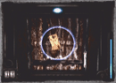 |
|
|
|
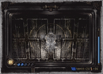 |
| ZERO：符咒 |
紅蝶：亡靈 |
刺青之聲：稻草人 |
|
| 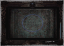 |
|
|
|
|
| 月蝕：扭狀圖案 |
|
|
|
| 已鎖上但沒有靈力反應的門需要找鎖匙或等待劇情開啟： |
|
|
| 黃圈、紅圈及連續拍攝 |
|
| 零 ZERO 的黃圈便是相當於紅蝶和刺青的紅圈。零 ZERO 並沒有靈力圈來蓄力，那台初代射影機是使用底部的梵文來代替靈力圈，梵文越多威力越大。 |
| 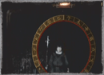 |
|
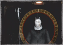 |
|
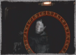 |
| 當怨靈從遠方走過來時靈力圈開始蓄力，這便是所謂的黃圈。 |
留意中間的黃圈。隨着怨靈慢慢靠近，蓄力相對提升，蓄力越大造成的傷害越大。 |
怨靈攻擊的瞬間靈力圈會變成紅圈。這時拍攝便會比全蓄力更強的 ZERO SHOT。 |
|
| TECMO 在紅蝶時開始追加連續拍攝 FATAL FRAME SHOT ( 簡稱 FF ) 功能。連段全部擊中的攻擊力十分驚人，分數為次數的累積。紅蝶最多只允許 3 連拍，月蝕的假面允許 15 連拍而刺青之聲在情況許可下可達到 30 連拍以上。每一個怨靈的連拍時機各有不同，這個多玩便能掌握。射影機的連拍機能在兩代中不一樣，紅蝶的裝備機能是【瞬】而刺青之聲是【報】，紅蝶在沒有【瞬】的情況下也可以憑經驗推測紅點時間進行連續拍攝，但刺青和月蝕要進行連拍必須擁有裝備機能【報】。以下是連續拍攝的過程： |
| 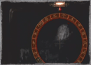 |
|
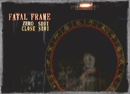 |
|
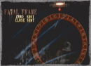 |
| 紅圈時不代表要立即攝影。還可以繼續等到連續拍攝時機出現。當紅色指示燈閃爍便代表可以隨時開始連續拍攝。 |
擊中靈體後繼續對準怨靈不要退出第一視點，它便會向後退並受到 FATAL FRAME SHOT 和 ZERO SHOT 傷害。 |
一秒後指示燈再次閃爍時再按快門。兩段的間格時間在不同難度下會有所不同。難度越高時間越短。 |
|
每次攻擊怨靈時也會收集靈力，靈力可以應用在強化鏡頭上，紅蝶一般玩家會使用一四式 + 一四式 + 一四式【刻】這樣三連拍最後一段攻擊力便會有強化鏡頭【刻】的加成。亦有玩家會使用一四式 + 一四式 + 一四式先完成三連拍，收集靈子後切換零式底片對怨靈使用單擊 ZERO SHOT + 零式【零】。看到這裡您大概明白刺青之聲的切換底片功能的確很方便，這樣您在第一輪便可以使用一四式 + 一四式 + 零式【零】。當然紅蝶也可以使用九O式 + 九O式 + 九O式【封】，接着切換零式以【零】強化鏡頭 + FATAL FRAME SHOT + ZERO SHOT + CLOSE SHOT + CORE SHOT 完成四段。
對付不同的怨靈會有不同的底片組合方式，這視乎強化鏡頭、底片數量、靈子是否足夠以及怨靈的紅點時間容不容易掌握，更重要是您能不能在紅點時間及時按下去，不然連到最後一段時才失手便功敗垂成。
特別注意的是紅蝶在拍攝中途是不可以切換底片，但刺青和月蝕可以用十字鍵左右來切換，正常來說紅蝶在三連拍中最後一段時會使用高傷害的強化鏡頭，而刺青之聲除了使用強化鏡頭外還可以使用零式底片最成更大傷害。在困難或惡夢模式時紅點的間格時間會越來越短，這時一四式的裝填時間來不及第二段，要用一些快速裝填的底片來連拍。月蝕的假面的底片裝填時間跟前作有所不同，詳情請參巧操作說明分頁。 |
| 為什麼有些怨靈拍不死？ |
|
| 那些稱為絕對靈 ( 無敵 )。紅蝶三ノ刻的楔、七ノ刻的紗重；刺青之聲八ノ刻的縄の男；終ノ刻前和終ノ刻異空間的久世零華；月蝕的假面終ノ蝕前只有八ノ蝕、十ノ蝕的灰原朔夜是可以受攻擊，其餘時間也是絕對靈。除朔夜外通常被它們抓到是一擊必殺 GAME OVER。遇到它們只好逃走或等待劇情事件完結。 |
| 裝備機能如何使用？ |
|
| 【避】、【報】、【感】、【拡】這些裝備機能在取得後便會自動替您裝上。預設是使用，亮的時候是裝備，沒發亮的時候取消裝備。 |
| 在各大零系列討論區中經常看到的術語 |
|
| 術語 | 解釋 |
|---|
| 01 | 零～ZERO 的另一種稱呼。02、03、04 同理。 |
| 女飛頭 | ZERO 中首女之靈的另一種稱呼。 |
| 天翔龍斬 / 居合斬 | ZERO 中冰室家當主的那一招極度變態攻擊的統稱。 |
| 貞子 | 紅蝶中躲在箱中的女人的另一種稱呼。 |
| 全都扭 | 紅蝶中摔死的女人的另一種稱呼。 |
| 繩叔 | 紅蝶中真壁清次郎 ( 繩之男 / 楔 ) 的另一種稱呼。 |
| 沙虫 | 紅蝶中黑澤紗重的另一種稱呼。 |
| 骷髏頭 | 紅蝶中像鬼火的統稱。由黑澤家當主放出。 |
| 菜刀伯 | 刺青之聲中鳴海天涯的另一種稱呼。 |
| 梳頭女 | 刺青之聲中久世鏡華的的另一種稱呼。 |
| 機車婆 | 刺青之聲中乳母車之老婆的另一種稱呼。 |
| 蟑螂女 | 刺青之聲中淺沼切子的另一種稱呼。 |
| 分屍女 | 刺青之聲中氷室緤的另一種稱呼。 |
| 千手怪 | ZERO 中霧繪或刺青之聲中久世夜舟的另一種稱呼。 |
| 刺青女 | 刺青之聲中久世零華的另一種稱呼。 |
| 憐 | 刺青之聲中黑澤怜的另一種稱呼。 |
| 螢叔 / 叔叔 | 刺青之聲中天倉螢的另一種稱呼。 |
| 黑白電視 / B & W | 刺青之聲中祓瘴燈火熄滅後的瘴氣狀態。 |
| 異次元 | 刺青之聲中久世零華在終ノ刻時使用的招式。 |
| ZS | ZERO SHOT。 |
| MC | MAX CHARGE。 |
| FF | FATAL FRAME SHOT ( 連續拍照 )，也可以解作連拍時機。 |
| FF | 零系列美版 FATAL FRAME 的另一種稱呼。 |
| PROJECT ZERO | 歐版零系列的名稱。 |
| S | 故事或任務模式中當達到一定條件後所得的一種高程度評價。 |
| SS | 紅蝶獨有的評價，比 S 還要高。 |
| COMBO | 連續技的意思，在零系列中比喻為 FF。 |
| 2 COMBO | 二段連續拍攝，三段是 3 COMBO。也可以指 COMBO 兩次。 |
| COMBO 2 次 | 連續拍攝兩次的意思，和 2 COMBO 是不同的。 |
| 零 + 零 | 使用零式底片和【零】強化鏡頭攝影。 |
| ZS + 零 + 0 | 在 ZERO SHOT 情況下使用零式底片和【零】強化鏡頭攝影。 |
| 90 + MC + FF + 滅 | 在 FF 情況下 MAX CHARGE ( 最大蓄力 ) 使用九零式底片和【滅】強化鏡頭攝影。 |
| 紅點 | 連拍時機出現時射影機上方的紅色指示燈會閃爍，也就是 FF 時機。 |
| 紅圈 | 達成 ZERO SHOT 條件時的紅色靈力圈。 |
| 黃圈 | 蓄力後的靈力圈而不達力其他條件，亦比喻作【連】強化鏡頭的時機。 |
| 怨靈 | 會主動攻擊您的靈體。 |
| 浮遊 | 浮遊靈。不會攻擊您並且出現後瞬間消失，主要用作提示以及考驗攝影技巧。 |
| 地縛 | 地縛靈或自縛靈。平時看不到，但是當它在附近時靈感應器會發出藍光提示，拍攝前靈力圈亦必須呈藍色。 |
| 感 | 裝備機能【感】。有些浮遊靈和地縛靈要需要這個機能才能探測。大多數在一周目通關後獲得，玩家便可以在二周目時拍到一些一周目看不到的靈體。 |
| 靈表 / 靈 LIST | 靈體列表。收集浮遊靈和怨靈的照片，有些浮遊靈需要很高拍攝技巧。 |
| 83 號靈 / 靈 83 | 大多數都是指靈體列表第 83 張。 |
| 二周目 | 完成遊戲一次後再玩一次。有些浮遊靈只會在二周目才會出現。 |
| 三周目 | 二周目後再玩一次。 |
| 任務模式 | 完成遊戲一次後追加的模式，可以當作動作遊戲玩。 |
| 完美結局 | TECMO 很喜歡把普通結局設為悲劇，然後在困難或惡夢追加大團圓結局。 |
| 最完美結局 | TECMO 亦很喜歡在 XBOX 版本再追加一個比大團圓更完美的結局。 |
| XB | XBOX 版本。目前零系列分為 PS2 版和 XBOX 版，再分為日版、美版 ( 歐版 )。 |
| CB | 美版零～紅蝶 CRIMSON BUTTERFLY 的縮寫。 |
| 4D 零 | 目前只在日本三個主題公園內展示的立體動畫，觀看時需配帶立體眼鏡。 |
| REAL 零 | 在日本手機上玩的零。 |
| 拖庫魔 / 脫褲魔 | 玩家對遊戲公司 TECMO 的另一種稱呼。 |
| 菊地 | 零系列製作人 － 菊地啓介。 |
| 柴田 | 零系列總監 － 柴田誠。 |
| 天野 | 天野月子 ( 已改名為天野月 )。紅蝶、刺青之聲、月蝕的假面的主題曲「蝶」、「聲」、「ゼロの調律」的作曲和主唱。 |
| COSPLAY | 穿著遊戲內角色的服飾進行角色扮演。 |
| 特典 | 含零系列製作介紹、設定資料集、映像 DVD 及一些文件資料。 |
| 香菇頭 | 類比搖桿 － L3 和 R3 的另一種稱呼。 |
| 金先生 | 金手指。 |
| 達人 | 依據其豐富經驗及長年的鍛鍊，進而心神領會該領域真髓的專家。 |
| 粉絲 | FANS。 |
|